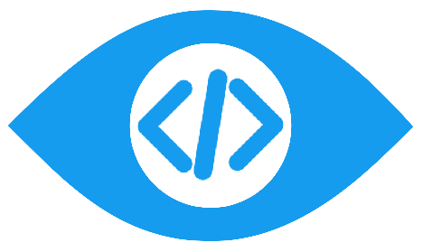

<!--
Home search bar
-->
<link rel="import" href="../../bower_components/polymer/polymer.html">
<link rel="import" href="../../bower_components/paper-styles/typography.html">
<link rel="import" href="../../bower_components/paper-toolbar/paper-toolbar.html">

<dom-module id="my-toolbar">
  <template>
    <style include="shared-styles" is="custom-style">
      a:link {
        text-decoration: none;
      }
      .specialText {
        font-stretch: normal;
        font-size: 46px;
        line-height: 50.6px;
        /*color: rgb(85, 85, 114);*/
        color: #169CEE;
        -webkit-font-smoothing: antialiased;
        letter-spacing: -2.16px;
        text-rendering: optimizeLegibility;
        text-align: center;
        font-smoothing: antialiased;
        -moz-font-smoothing: antialiased;
        ms-font-smoothing: antialiased;
      }
      .topSearch {
        flex-grow: 1; /* default 0 */
        font-size: 20px;
        height:80%;
        border:0px;
        font-size: 30px;
      }
      input.topSearch:focus {
        outline-width: 0;
      }
      .center {
        margin: auto;
        width: 100%;
      }

      .headerLogo {
        height: 50px;
        margin-left: 90px;
      }

      .logo {
        height: 60px;
        margin-bottom: -15px;
      }
      paper-toolbar.paper-toolbar-0 {
        background: white;
        border:1px solid white;
        /*padding: 100px;*/
        padding-top: 30px;
      }

      .companyName {
        margin-right: 9px;
        font-stretch: normal;
        font-size: 36px;
        line-height: 50.6px;
        color: rgb(85, 85, 114);
        -webkit-font-smoothing: antialiased;
        letter-spacing: -2.16px;
        text-rendering: optimizeLegibility;
        text-align: center;
        font-smoothing: antialiased;
        -moz-font-smoothing: antialiased;
        ms-font-smoothing: antialiased;
      }

      .topSearch {
        flex-grow: 1; /* default 0 */
        font-size: 20px;
        height:80%;
        border:0px;
        font-size: 30px;
      }

      input.topSearch:focus {
        outline-width: 0;
      }

      input.homepage-input:focus {
        outline-width: 0;
      }
      .searchIcon {
        height: 72px;
        width: 72px;
        color: rgb(85, 85, 114);
      }

      /* Small */
      @media (max-width: 600px) {
        .headerLogo {
          margin-left: 0;
        }
      }
    </style>

    <paper-toolbar class="medium-tall scroll contain">
      <!--<a data-route="home" href="{{baseUrl}}home">-->
        <!---->
      <!--</a>-->
      <!--<a href$="{{baseUrl}}home">-->
        <!--<p class="specialText">GitLinks</p>-->
      <!--</a>-->


      <!--<input class="topSearch"-->
             <!--type="search"-->
             <!--autocomplete="off"-->
             <!--autofocus/>-->
      <!--<a data-route="results" href$="{{baseUrl}}results" tabindex="-1">-->
        <!--<paper-icon-button class="searchIcon" icon="search"></paper-icon-button>-->
      <!--</a>-->
    </paper-toolbar>
  </template>

  <script>

    Polymer({
      is: 'my-toolbar'
    });


  </script>
</dom-module>
